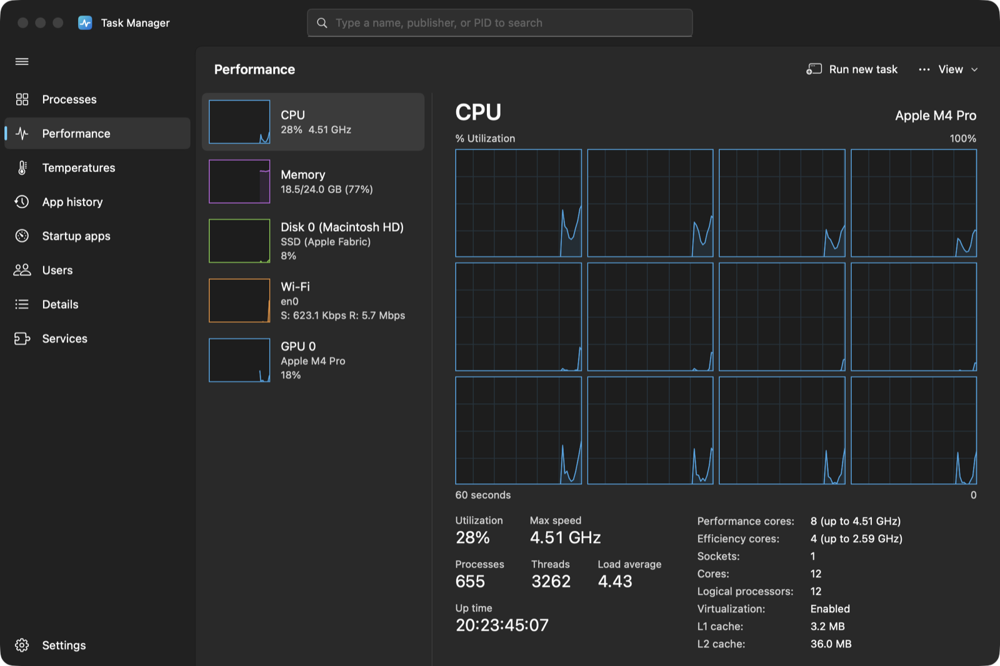
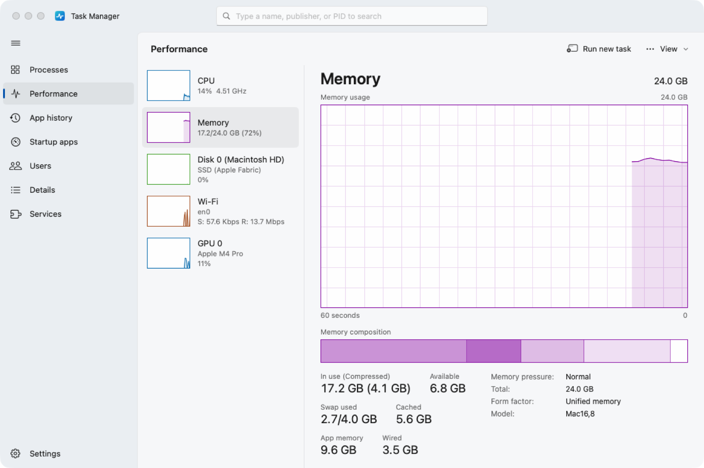
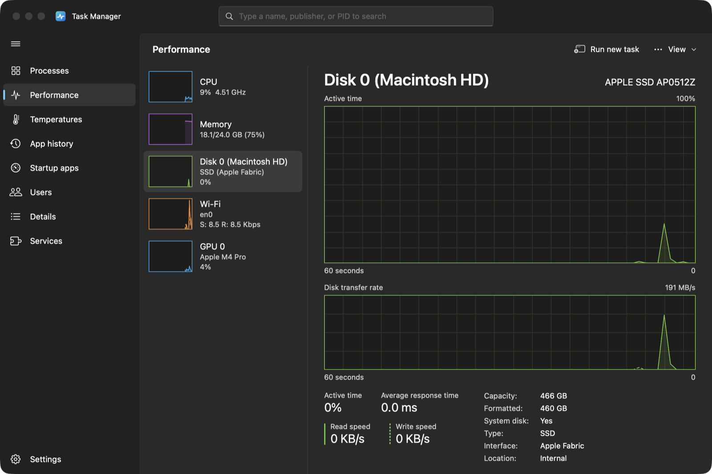
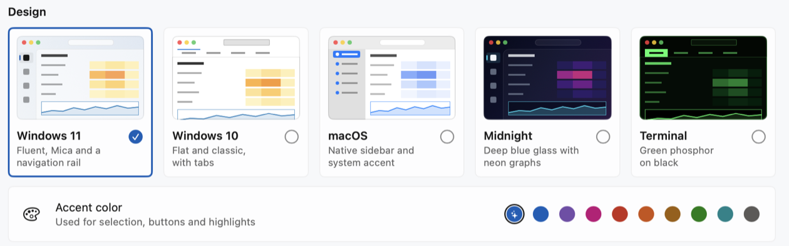
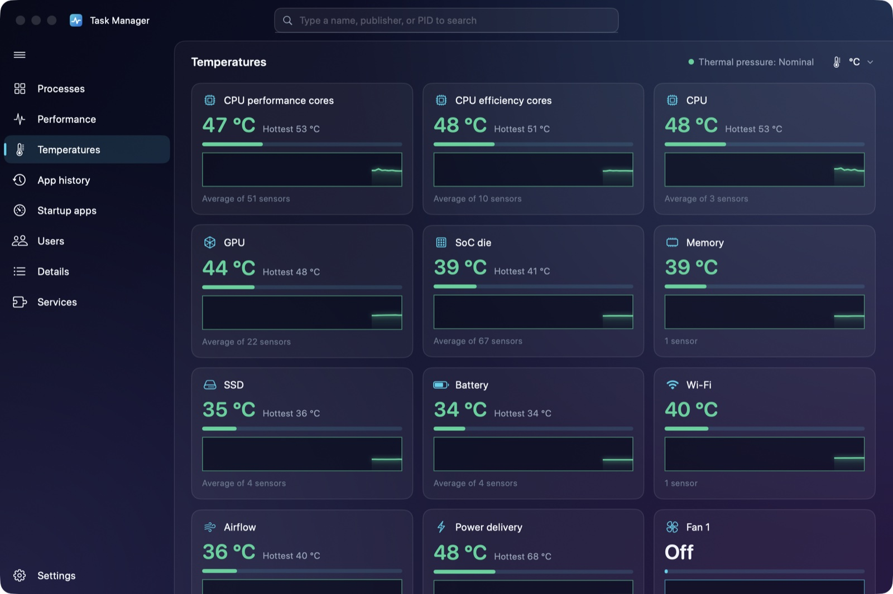
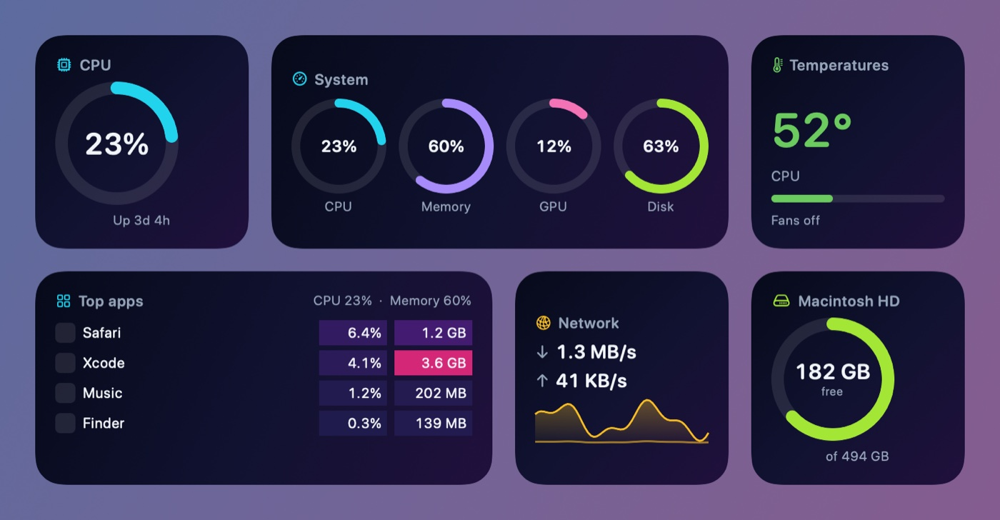

The Windows 11 Task Manager, rebuilt for your Mac.
Heat-mapped processes, live performance graphs, startup apps, services and more, in a native app that keeps itself up to date.
| Name | Status | 23%CPU | 61%Memory | 2%Disk | 0%Network |
|---|
Every page you know from Windows
The same pages, layout and shortcuts, reading real data from macOS, plus a Temperatures page Windows never had.
Processes
Apps, background and macOS processes, each app grouped with its helpers. Heat-mapped CPU, memory, disk and network, plus the columns you choose.
Performance
Live 60-second graphs for CPU (overall or per core), memory, every disk, each network adapter and the GPU.
Temperatures
CPU cores, GPU, SoC, memory, SSD and battery sensors with min, max and history, plus fan speeds and thermal pressure.
App history
CPU time, network and disk use for each app, kept between launches.
Startup apps
Login items, launch agents and daemons with their publisher. Enable or disable them in one click.
Users
What each account on your Mac is using, expandable to its apps.
Details
Every process with PID, user, CPU time, threads, architecture and priority, including Rosetta apps.
Services
launchd services in the user and system domains. Start, stop or restart them.
Settings
Five designs, accent colours, update speed, always on top, menu bar items and online updates.
Press ⌃ ⇧ ⎋ anywhere
The same shortcut as Ctrl+Shift+Esc brings Task Manager to the front from any app.
Efficiency mode and End task
Lower a process's priority, suspend it, end it or its whole tree. Run new task even understands notepad and calc.
Updates itself
Checks GitHub once a day. Install a new version from Settings and it restarts on the new build.
Five designs
Windows 11, Windows 10 with tabs, a native macOS sidebar, Midnight and a green-on-black Terminal look, with any accent colour.
Menu bar items
CPU, memory, GPU, network, disk and temperature as values, graphs or meters. Click one for a live pop-over.
Widgets
CPU, Memory, System, Top Apps, Temperatures, Network and Storage widgets for the desktop and Notification Center.
Real data, Windows 11 style
Light and dark mode follow your Mac, or pick one in Settings.



New in 1.1
Pick a design, keep an eye on temperatures, and put Task Manager on your desktop and in the menu bar.



Install
Task Manager is free and runs on macOS 15 Sequoia or later, on Apple silicon and Intel Macs.
One command Recommended
Paste this into Terminal. It downloads the latest release, checks its SHA-256 checksum, installs it in Applications and opens it.
curl -fsSL https://mr-who-root.github.io/macos-task-manager/install.sh | bashWant to read it first? View install.sh.
Manual download
- Download TaskManager.zip and double-click it to unzip.
- Drag Task Manager into your Applications folder.
- Open it. The app isn't notarized by Apple, so the first time macOS blocks it. Go to System Settings › Privacy & Security and click Open Anyway. Or run
xattr -dr com.apple.quarantine "/Applications/Task Manager.app".
Questions
How do updates work?
Once a day Task Manager asks GitHub for the latest release. When there's a new version you'll see a dot on Settings. Choose Download and install: the app checks the download's checksum and signature, replaces itself and restarts. You can also check by hand or turn automatic checks off in Settings › Updates.
What does Efficiency mode do?
It puts a process at macOS background priority: the lowest CPU priority, the efficiency cores, and throttled disk and network use, which saves power. Task Manager asks before turning it on and marks those processes with a green leaf. Use it for background work such as syncing or long builds, not for apps you're actively using: browsers, video calls, games and music can stop feeling smooth. Click Efficiency mode again, or quit and reopen the app, to undo it.
Why does it sometimes ask for my password?
macOS hides other users' processes, such as those owned by root. Task Manager can show them, but ending one, changing its priority or putting it in efficiency mode needs an administrator. macOS shows its own password prompt; Task Manager never sees your password.
Why does Startup apps want to control System Events?
Login items are read through System Events, so macOS asks once for Automation permission. Launch agents and daemons are listed without it.
Is there a GPU column like on Windows?
No. macOS doesn't report GPU use per process, so GPU usage appears on the Performance page only. Apple silicon also doesn't expose the current CPU frequency, so Task Manager shows each core type's maximum speed.
How do I uninstall it?
Quit Task Manager, drag it from Applications to the Trash and, if you like, delete ~/Library/Application Support/TaskManager, which holds your app history.